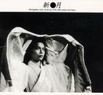

| Artist: | Shingetsu |
| Title: | Shingetsu Live 25-26 July 1979 |
| Label: | Musea FGBG 4571.AR |
| Length(s): | 68 minutes |
| Year(s) of release: | 2004 |
| Month of review: | [06/2005] |
| 1) | Oni/Fragments Of The Dawn | 10.29 |
| 2) | The Other Side Of Morning | 7.21 |
| 3) | Influential Street | 4.01 |
| 4) | Afternoon-after The Rain | 4.17 |
| 5) | She Can't Return Home | 4.15 |
| 6) | Night Collector | 5.07 |
| 7) | Reddish Eyes On Mirror | 5.11 |
| 8) | Voyage For Killing Love Part 2 | 20.39 |
| 9) | Return Of The Night | 6.090 |
The recording quality of this concert given a month after the release of the band's debut album is at times poor. However, this is easily compensated for by the emotion and theatricality (that a word?) of the music. The band refrains from attempts at singing in English. The downside is of course that the vocals are sounds only to most, the upside is that there is animation, emotion in them. And a bit of a waver :) Unfortunately not all the material on this disc washes over you as much as the first two tracks do. A track like Influential Street just passes by a bit, especially if you compare it musically to such tracks as Oni and Afternoon with sweeping melodies and lingering guitar, which can compete not just on style but on impact too. But then again, Genesis produced such interlude oriented tracks as well. Fact is that the majority of tracks Is strong, both in intensity and melody.
Clearly, Shingetsu takes a lot of credit from Genesis. Having said that, the band do blend in a lot of Japanese influences. The synths for instance regularly breathe warm quality of Kitaro synths. But we also get some more traditional Japanese sounds.